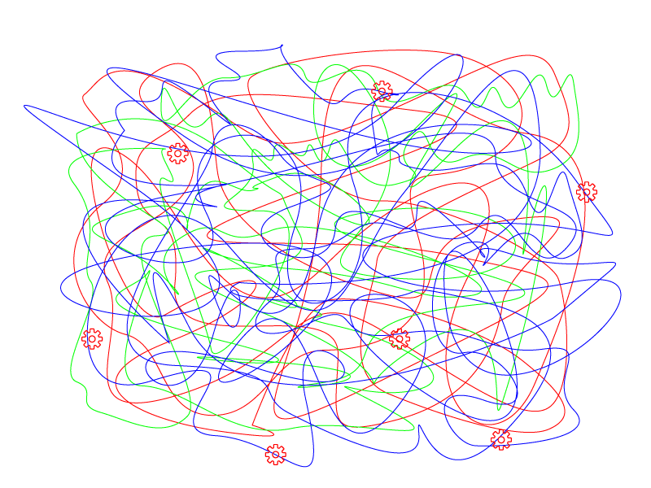

Aliaksei Kuncevič
Angular Expert @ angularconsulting.com.au
v 1.0 (13/02/2019)
Typescript
all the way from front to back
v 1.0 (13/02/2019)
Typescript
Who is already using Typescript?
Who is not using Typescript?
Who want to use Typescript?
What year Typescript started to get heavily adopted by the front-end world?
2016
React vs Angular vs Vue vs Ember
Will typescript go even more popular over the years?
How would you approach typescript for back-end development?
Anyone tried that?
I did, early 2016
Dependency injection
inversify.ioConfig/Typings
Recent days
A progressive Node.js framework for building efficient and scalable server-side applications on top of TypeScript & JavaScript (ES6, ES7, ES8) heavily inspired by Angular
Features
- Controllers
- Dependency Injection
- Providers
- Modules
- Middlewares
- Pipes
- Guards
- Interseptors
- Custom decorators
- Testable
- OOP/FP/FRP
Benefits
- Build awesome maintainable apps
- Share Typescript code between Angular and Nestjs
- Expressjs under the hood
- Compatibility with many other Nodejs libraries
Init new project
npm i -g @nestjs/cli
nest new project-name*using @angular/devkit under the hood
NPM Run
build
tsc -p tsconfig.build.json
format
prettier --write "src/**/*.ts"
start:dev
nodemon
start:debug
nodemon --config nodemon-debug.json
prestart:prod
rimraf dist && tsc
start:prod
node dist/main.js
lint
tslint -p tsconfig.json -c tslint.json
test:watch
jest --watch
test:cov
jest --coverage
test:debug
node --inspect-brk -r tsconfig-paths/register -r ts-node/register node_modules/.bin/jest --runInBand
test:e2e
jest --config ./test/jest-e2e.jsonCode sharing
"compilerOptions": {
"paths": {
"@serverTypes/*": ["../server/src/types/*"],
"@serverHelpers/*": ["../server/src/core/helpers/*"]
}
},Using NestJS with Nx
ng g node-app nestjs-app --framework nestjs
ng serve nestjs-app
ng build nestjs-app
ng test nestjs-app
ng lint nestjs-app